AIKU 24-2 DeepIntoDeep 9회 딥러닝 입문하기 - Object Detection¶
흥미로운 내용 3가지 :
- 오브젝트 디텍션은 물체의 종류, 위치, 그리고 자신감까지 출력한다.
- 투 스테이지와 싱글 스테이지는 오브젝트 디텍션의 두 가지 주요 접근 방식이다.
- 바운딩 박스를 표현하는데 IoU와 NMS 등의 개념을 활용하여 모델의 성능을 향상시킬 수 있다.
이 영상에서는 오브젝트 디텍션의 기본 개념과 다양한 접근 방식인 투 스테이지 및 싱글 스테이지 모델을 설명합니다. 강의는 초보자도 이해할 수 있도록 친절하게 구성되어 있으며, 딥러닝을 활용한 오브젝트 디텍션에서 CNN과 트랜스포머 모델의 사용을 중심으로 진행됩니다. 특히, 성능과 속도의 균형을 맞추기 위한 다양한 방법론이 소개되어 '오브젝트 디텍션'의 이해를 돕습니다.
핵심주제¶
오브젝트 디텍션은 로컬라이제이션과 분류의 두 가지 주요 문제로 구성된다.
-
오브젝트 디텍션은 입력된 이미지에서 물체의 종류를 알아내고 위치를 예측하는 과정이다.
-
로컬라이제이션은 개체의 위치를 추정하고, 분류는 그 물체가 무엇인지 식별하는 것을 목표로 한다.
-
이 두 가지 작업을 통해 디지털 이미지 속 정보를 효과적으로 분석할 수 있다.
딥러닝 기반의 모델인 CNN과 트랜스포머는 오브젝트 디텍션에 널리 사용된다.
-
CNN은 이미지를 두 단계로 처리하여 물체의 위치를 추출하고, 각 위치의 물체를 분류한다.
-
트랜스포머는 이미지와 피처를 입력으로 받아 더 높은 효율성을 제공하며, CNN과 결합되어 효과적인 모델을 형성한다.
-
이 두 기술의 결합은 성능 저하 없이 계산량을 줄이는 데 기여한다.
프리시전과 리콜은 오브젝트 디텍션의 성능 평가에 필수적이다.
-
프리시전은 정확한 예측의 비율을 나타내고, 리콜은 실제 정답 중 올바르게 예측한 비율을 나타낸다.
-
이 두 지표의 관계는 모델의 성능을 평가하고 튜닝하는 데 중요한 역할을 한다.
-
이상적인 상황에서는 평균 정밀도를 통해 총 성능을 나타내며, 이를 통해 다양한 클래스로 구분된 정보를 비교할 수 있다.
YOLO 및 DETR 같은 모델들은 기존 방법보다 더 간단하게 오브젝트 디텍션을 수행한다.
-
YOLO는 이미지를 격자로 나누어 빠른 속도로 바운딩 박스를 예측할 수 있는 장점이 있다.
-
DETR은 기존의 바운딩 박스 설정 과정을 생략하여 효율적인 디텍션을 가능하게 한다.
-
이러한 모델들은 복잡한 과정을 단순화하여 더 빠른 결과를 제공하고, 실시간 처리의 한계를 보완한다.
중복 제거(NMS)는 바운딩 박스 예측의 정확성을 높이는 중요한 기법이다.
-
NMS는 예측된 바운딩 박스 중 중복된 것을 제거하여 최종 결과를 정제하는 역할을 한다.
-
이를 통해 더욱 깔끔한 결과를 얻고, 모델의 성능을 향상시키는 데 기여할 수 있다.
-
중복 제거가 없다면, 모델이 동일한 물체를 여러 번 예측하여 혼란을 초래할 수 있기 때문에 필수적이다.
타임라인¶
1. 🤖 오브젝트 디텍션 개요¶
- 오브젝트 디텍션이란, 주어진 이미지에서 물체의 위치와 종류를 예측하는 작업이다.
-
디텍션은 로컬라이제이션(물체의 위치 추정)과 분류(물체가 무엇인지 판별) 두 가지 태스크로 구성된다.
-
투 스테이지와 싱글 스테이지 모델 두 가지 계열로 나뉜다.
-
주로 CNN과 트랜스포머 모델을 사용하여 오브젝트 디텍션을 수행한다.
-
최근에는 트랜스포머 모델이 많이 사용되지만, 트랜스포머 디텍션 모델의 기반은 여전히 CNN 모델이다.
2. 🖼️오브젝트 디텍션의 기본 개념과 접근 방식¶
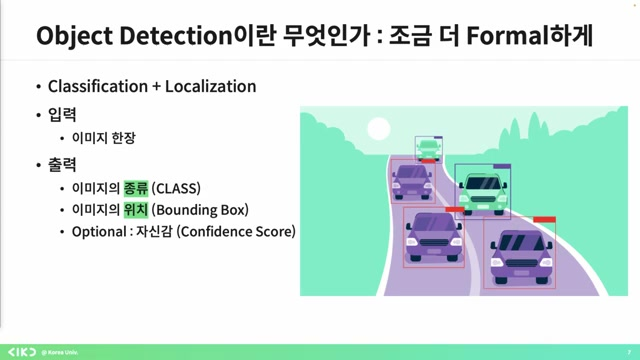 - 오브젝트 디텍션에서는 물체의 종류, 위치, 그리고 예측값에 대한 자신감까지 출력한다.
-
하지만 이미지마다 물체의 개수와 순서가 다르기 때문에 단순하게 CNN 출력으로 해결하기 힘들다.
-
이러한 문제를 해결하기 위한 접근 방식으로는 두 가지가 있으며, 하나는 투 스테이지 방식이고 다른 하나는 원 스테이지 방식이다.
-
투 스테이지는 물체의 위치를 먼저 추출한 후 물체의 종류를 알아내고, 원 스테이지는 한 번에 모든 정보를 제공하는 방식이다.
-
이 영상에서는 유명한 모델들을 통해 하이 레벨의 문제점과 발전 과정을 다룰 예정이다.
3. 바운딩 박스와 IoU, NMS 개념 설명¶
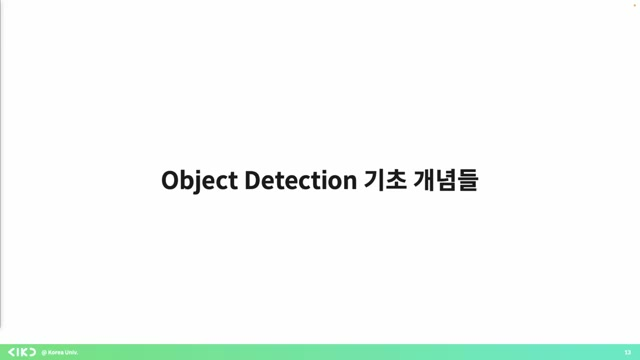 - 바운딩 박스를 표현하기 위해 좌표 네 개를 사용한다.
-
IoU(Intersection over Union) 개념을 통해 바운딩 박스의 정확성을 평가하며, GT 바운딩 박스에 가까울수록 IoU가 높아진다.
-
모델이 여러 개의 바운딩 박스를 예측할 때, 중복된 박스를 하나로 합치는 기법이 non-maximum suppression(NMS)이다.
-
예측된 바운딩 박스와 GT 바운딩 박스를 매칭하며, IoU가 0.5보다 높으면 매칭된 것으로 판단하고 학습을 진행한다.
-
0.5라는 값은 절대적이지 않으며, 상황에 따라 변할 수 있다.
4. 프리시전과 리콜의 기본 개념 및 정의¶
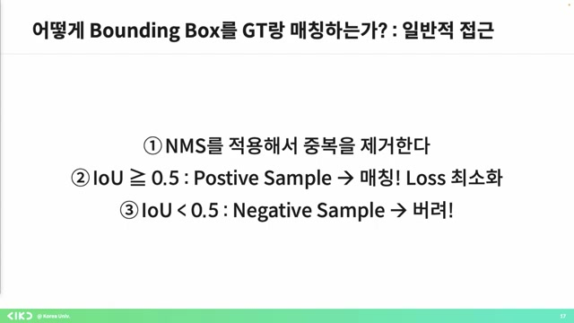 - 프리시전은 모델이 정답을 예측한 샘플 중 실제 정답인 샘플의 비율이며, 리콜은 실제 정답 중 모델이 정답이라고 예측한 비율이다.
-
프리시전과 리콜은 반비례 관계로, 쓰레시 홀드를 낮게 잡으면 리콜은 올라가고 프리시전은 내려가며, 높게 잡으면 반대로 리콜은 내려가고 프리시전은 올라간다.
-
이상적인 경우에는 평균 정밀도(average precision, AP)를 통해 모델의 성능을 평가하며, 클래스별 AP 평균을 내어 mAP(Mean Average Precision)으로 나타낸다.
-
이 개념들은 오브젝트 디텍션을 이해하기 위해 필수적이며, 질문이 있을 경우 언제든지 질문하면 된다.
5. ️🧠딥러닝의 시작, CNN과 객체 탐지¶
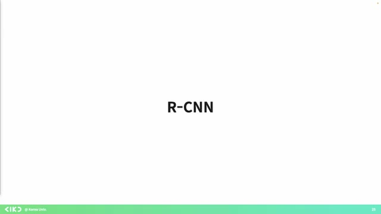 - 태초에 ICNN이 있었고, 이는 딥러닝으로 객체 탐지를 시도한 최초의 모델이다.
-
이 모델은 이미지를 두 단계로 처리하여, 가능한 위치를 추출한 후 그 위에서 각 프로포저를 통해 분류를 수행한다.
-
딥러닝 이전에도 컴퓨터 비전 알고리즘이 있었으며, 이때는 사용 가능한 위치를 먼저 추출하고 CNN으로 인식시키는 방식을 사용했다.
-
CNN 피처를 활용해 분류를 할 때, ML 대신 서포트 벡터 머신과 선형 회기를 사용하여 더 나은 성능을 보였고, 데이터와 하드웨어가 부족한 상황에서도 효과적이었다.
-
CNN 피처는 이미지의 공간적 특성을 잘 유지하며, 리셉티브 필드의 정보를 전달한다는 점에서 전통적인 머신러닝 방법도 여전히 유효하다는 것을 강조하고 싶었다.
6. CNN 피처와 RCNN 구조에 대한 설명¶
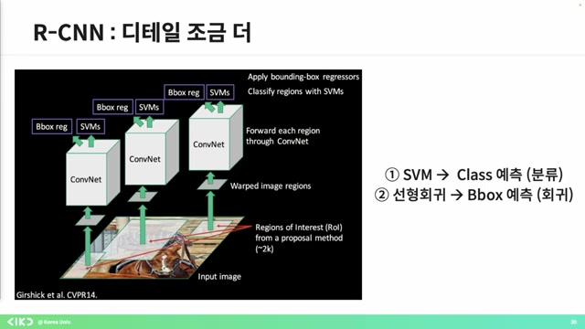 - CNN 피처는 인풋 이미지 정보를 효율적으로 압축하여 다양한 작업에서 잘 사용될 수 있다.
-
RCNN 구조에서는 인풋 이미지가 들어가면 셀렉티브 설치 제안이 이루어지며, 이 과정에서 2000개의 CNN 피처를 추출하여 각각 클래스와 바운딩 박스를 예측한다.
-
딥러닝 기반의 오브젝트 디텍션은 기존의 컴퓨터 비전 방법론보다 더 효과적으로 작동하지만, CNN 학습, 서포트 벡터 머신 및 선형 회귀를 따로 학습해야 하기 때문에 학습 과정이 어렵고 복잡하다.
-
이로 인해 연산량이 많아지며, 속도의 병목 현상이 발생한다.
-
따라서 패스트 RCNN은 이 문제를 해결하기 위해 CNN 계산을 한 번으로 줄이는 방식으로 개선되었다.
7. CNN을 이용한 이미지 처리 구조 이해하기¶
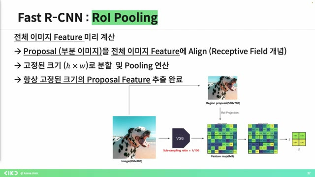 - 현재 8 * 8의 피처 맵을 기반으로 전체 이미지의 피처를 미리 계산하며, CNN을 사용하여 해당 영역을 이미지에 표시할 수 있다.
-
이러한 과정은 CNN이 공간적인 정보를 유지하기 때문에 가능하며, 이를 통해 고정된 크기의 피처 맵을 생성할 수 있다.
-
RCNN 구조에서는 이미지 인풋이 주어지면 셀렉티브 서치를 통해 피처를 추출하고, 맥스 풀링을 통해 고정된 크기의 피처 맵이 생성된다.
-
이 구조는 기존의 방법보다 트레이닝 타임을 20배 단축시키고, 메모리 사용량도 줄여 가격 감소에 기여한다.
-
하지만 셀렉티브 서치를 통한 이미지 리프로포절 계산은 여전히 비용이 많이 드는 반복 과정을 포함한다.
8. 딥러닝 기반의 리전 프로포절 네트워크 설명¶
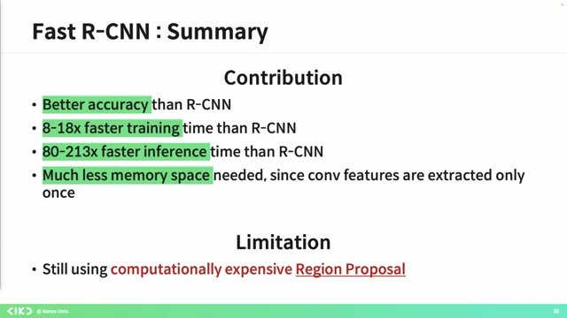 - 스트 RCNN은 기존의 컴퓨터 비전 알고리즘에 의존하여 엔드 투 엔드 학습이 불가능한 점을 지적하며, 이를 리전 프로포즈 네트워크로 대체하고자 한다.
-
기존의 인풋 이미지에서 피처 맵을 뽑고, CNN을 활용한 전처리 과정을 통해 리전 프로포를 생성하고 R 풀링을 진행하는 구조를 설명한다.
-
RPN(리전 프로포절 네트워크)의 목적은 위의 프로포 뽑아내는 과정을 네트워크에서 처리하도록 하는 것이며, 이 과정이 핵심이라고 강조한다.
-
마지막으로, 앵커 박스 개념을 도입하며 전체 이미지에 대한 처리 결과를 어떻게 받아들이는지를 풀어내고 있다.
9. 바운딩 박스 생성 및 확률 도출 과정 설명¶
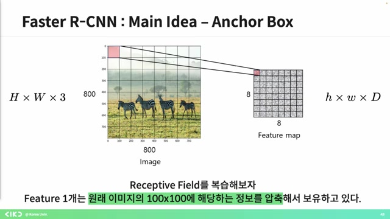 - 피처 맵 대신, 피처 하나마다 한 개의 바운딩 박스를 가정하며 이를 처리하게 된다.
-
이 경우 다양한 크기의 바운딩 박스를 만들 수 없으므로, 각 피처마다 다양한 종횡비의 바운딩 박스 아홉 개를 미리 부여한다.
-
격자 하나가 물체 하나를 탐지하도록 하려면, 물체의 크기를 모르기 때문에 바운딩 박스의 크기를 미리 설정하는 것이 중요하다.
-
결과적으로 각 격자 안에 물체의 존재 확률을 도출하게 되고, RPN에서는 분류와 바운딩 박스를 위한 두 개의 피처 맵이 생성된다.
-
각 픽셀에 대해 객체 포함 여부와 아홉 개의 앵커 박스에 대한 판단을 하고, 바운딩 박스 좌표는 네 개로 예측하는 과정으로 진행된다.
10. 물체 감지와 바운딩 박스 예측 기법¶
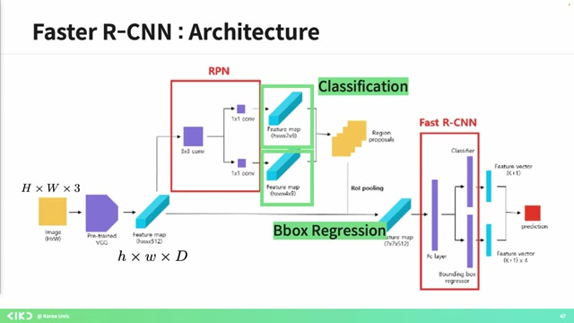 - 각각의 픽셀에 대해 물체 존재 여부와 바운딩 박스를 예측하고자 하며, 여러 앵커 박스를 통해 이 과정을 진행한다.
-
예측된 바운딩 박스 중에서 좋은 것과 나쁜 것을 구분하기 위해 중복 제거 과정(NMS)을 실행하여 깔끔한 결과를 얻는다.
-
그 후에는 리얼타임 처리의 한계로 인해 속도를 보완하기 위한 욜로 모델을 소개하며, 싱글 스테이지 방식의 훈련 간편성을 강조한다.
-
이 모델은 CNN 구조를 기반으로 하며, 다양한 모듈식 구조보다 간단하고 통합적 학습이 가능하다는 장점을 갖춘다.
11. 📊컨볼루션 레이어 설계 및 물체 탐지 과정 설명¶
 - 컨볼루션 레이어와 네트워크 설계를 살펴보면, 인풋 이미지를 7x7로 분할하여 각 셀이 물체 하나를 탐지하는 역할을 한다.
- 컨볼루션 레이어와 네트워크 설계를 살펴보면, 인풋 이미지를 7x7로 분할하여 각 셀이 물체 하나를 탐지하는 역할을 한다.
-
각 그리드 셀은 자신의 책임을 가지고 중심에 있는 오브젝트를 탐지하며, 이를 바운딩 박스와 클래스 스코어로 예측한다.
-
탐지할 수 있는 물체가 여러 개일 경우, 후보군을 여러 개 예측하게 하여, 각 그리드 셀에서 어떤 물체가 있는지에 대한 클래스 스코어를 예측하도록 한다.
-
최종 아웃풋은 인풋 이미지를 나누고, 각 셀이 예측한 정보를 조합하여 생성한다.
12. ️🔍YOLO 및 DETR 기반 오브젝트 디텍션 기술 설명¶
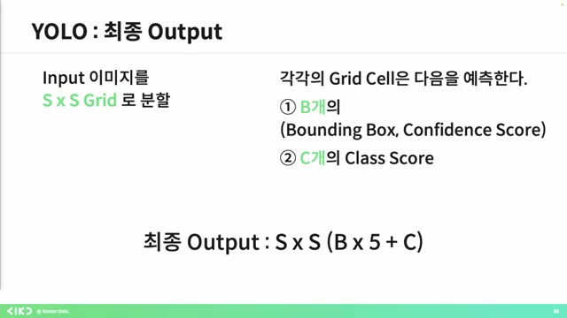 - YOLO는 이미지를 7x7로 분할하여 다양한 크기의 바운딩 박스를 예측하도록 설계되었으며, 최대 20개의 클래스를 예측할 수 있다.
-
이 구조는 CNN을 기반으로 하여 45 프레임의 속도로 빠른 처리가 가능하지만, 성능 면에서는 투 스테이지 방식보다 다소 떨어진다.
-
기존의 오브젝트 디텍션 방식은 사람이 설정한 바운딩 박스를 사용하지만, DETR은 이러한 과정을 생략하여 더 간단하게 예측할 수 있다.
-
DETR은 리스틱 특성을 제거하여 기존 방법론과 비교해 더 효율적인 오브젝트 디텍션을 가능하게 한다.
13. DETR 구조와 트랜스포머의 간단한 이해¶
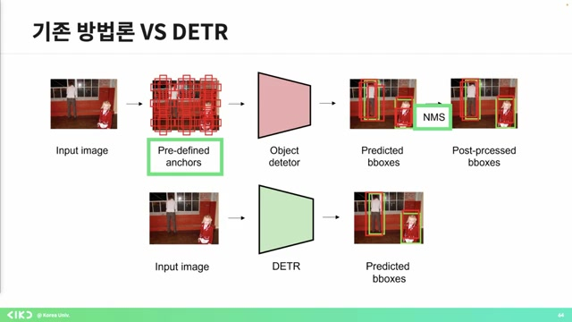 - DETR 구조는 간단하게 인풋 이미지가 있으며, 이를 통해 프리딕트 박스가 나온다.
-
이미지가 입력되면 CNN을 통해 피처를 뽑고, 이를 트랜스포머 구조에 넣어 결과를 예측한다.
-
피처를 뽑아 포지셔널 인코딩을 더한 후, 인코더를 통해 다시 피처를 추출하여 오브젝트 쿼리를 통해 클래스와 바운딩 박스를 예측하게 된다.
-
아울러 매칭 과정은 효율적이며, CNN과 트랜스포머의 사용으로 인해 계산량이 줄어든다.
-
결론적으로 구조는 단순하나, 구조를 이해하기 위해선 보다 전문적인 설명이 필요하다고 언급했다.
14. 트랜스포머의 포지셔널 인코딩 역할¶
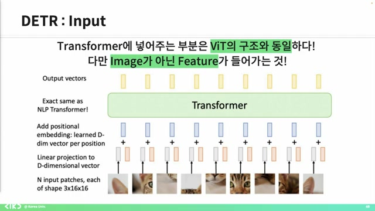 - 트랜스포머 모델에서는 포지셔널 인코딩이 필요하며, 이는 입력 순서가 결과에 영향을 미치지 않도록 하기 위한 것이다.
-
트랜스포머는 입력의 순서가 변했을 때도 동일한 출력을 결과로 내며, 이를 '순열 불변'이라고 한다.
-
따라서 각 패치의 위치 정보를 학습하기 위해 포지셔널 인코딩을 활용하게 되며, 이로 인해 해당 정보를 통해 학습과 추론을 진행할 수 있다.
-
트랜스포머 디코더는 최대 예측 가능한 객체의 개수에 제한이 있으며, 각각의 입력에 대해 바운딩 박스와 클래스 확률을 예측한다.
-
이러한 예측된 바운딩 박스와 클래스 확률은 특정 알고리즘을 통해 매칭되고 로스를 최소화する 역할을 한다.
15. 트랜스포머 CNN의 구조와 DTR의 기여¶
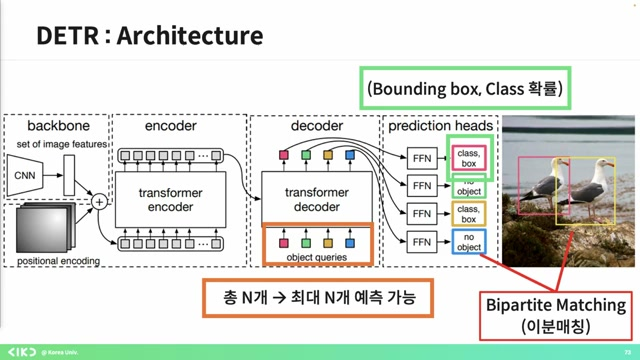 - 트랜스포머 CNN의 구조가 생각보다 간단하다는 것을 확인할 수 있다.
-
많은 오버세이버 모델들이 DT 기반으로 트랜스포머 구조를 사용하고 있으며, 이 모델들은 많이 사용되고 있다.
-
프리디파인 앵커와 NMS 같은 후처리 부분이 완전히 사라졌다는 점도 DTR의 기여 중 하나로 볼 수 있다.
-
질문이 없다면 강의를 마치겠다고 말하며, 수고하셨다는 인사를 전했다.